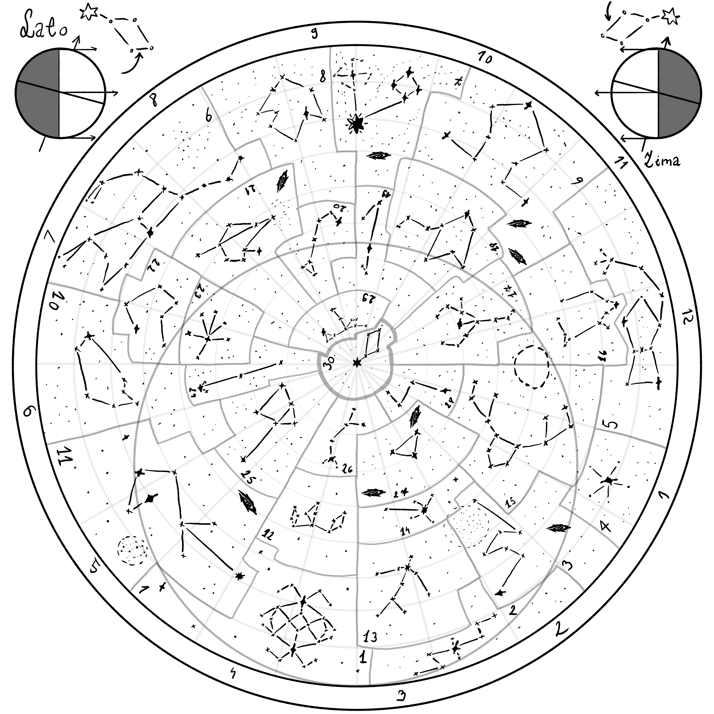

Wprowadzenie
Na nocnym niebie wyróżniamy 30 konstelacji, z czego tylko 12 to znaki urodzenia. Dodatkowo istnieją 3 konstelacje okresowe: Simiargł, Moneta (Lel) oraz Worek (Polel).
Mapa nieba
Szare koło na mapie to pole widzenia danego miesiąca – podobnie jak w działaniu astrolabium. Konstelacje okresowe nie są zaznaczone, bo pojawiają się tylko w określonych momentach.
Lista wszystkich konstelacji
- Nula
- Duży Piorun
- Łuk
- Błysk
- Luneta
- Dzban
- Rodzina
- Tarcza
- Wielka Niedźwiedzica
- Muszelka
- Strzała
- Korona
- Panna
- Spadająca Gwiazda
- Jeleń
- Astrarium
- Laska
- Księga
- Wędka
- Ciupaga
- Łódka
- Warkocz
- Dłoń
- Kometa
- Siekiera
- Łodyga
- Kwadrant Astrolabium
- Mały Piorun
- Łabędź
- Lutnia
Znaki urodzenia (miesięczne)
- Jeleń — Styczeń (15)
- Kwadrant — Luty (27)
- Panna — Marzec (13)
- Korona — Kwiecień (12)
- Strzała — Maj (11)
- Muszelka — Czerwiec (10)
- Warkocz — Lipiec (22)
- Wielka Niedźwiedzica — Sierpień (9)
- Tarcza — Wrzesień (8)
- Wędka — Październik (19)
- Dzban — Listopad (6)
- Luneta — Grudzień (5)
Konstelacje okresowe
- Simiargł – pojawia się pod koniec każdej ery
- Moneta (Lel) – co 5 lat po zachodzie Słońca
- Worek (Polel) – co 5 lat w środku nocy
Cechy osobowości przypisywane do znaków pozostają przedmiotem nauk astrologicznych — warto je odkrywać samodzielnie.